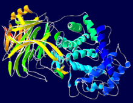

Hyaluronidase
* Định nghĩa:
+ Men làm lỏng tổ chức
+ Hyaluronidases là dòng enzyme làm phân giải acid hyaluronic, bằng cách xúc tác sự thủy phân của acid hyaluronic, một phần tử chính của hàng rào hở, men hyaluronic làm giảm độ nhầy của acid hyaluronic, vì thế gia tăng độ xuyên thấm vào mô. Chính vì điều này, nó được sử dụng trong y khoa phối hợp với thuốc để gia tăng sự phân tán và ngấm thuốc. Việc sử dụng phổ biến nhất là trong phẫu thuật nhãn khoa, nó được sử dụng với thuốc gây tê tại chổ.
+ Phân tử Hyaluronidase

The hyaluronidases are a family of enzymes that degrade hyaluronic acid.
By catalyzing the hydrolysis of hyaluronic acid, a major constituent of the interstitial barrier, hyaluronidase lowers the viscosity of hyaluronic acid, thereby increasing tissue permeability. It is, therefore, used in medicine in conjunction with other drugs in order to speed their dispersion and delivery. The most common application is in ophthalmic surgery, in which it is used in combination with local anesthetics. It also increases the absorption rate of parenteral fluids given by hypodermoclysis, and is an adjunct in subcutaneous urography for improving resorption of radiopague agents. Hyalurodinase is also used for extravastation of hyperosmolar solutions. usually a 0.2 ml of the drug is injected around the area of extravastation, Total of 1 ml is used.
Some bacteria, such as Staphylococcus aureus, Streptococcus pyogenes and Clostridium pergringens, produce hyaluronidase as a means for greater mobility through the body's tissues and as an angtigenic disguise that prevents their being recognized by phagocytes of the immune system.
In most mammalian fertilization, hyaluronidase is released by the acrosome of the sperm cell after it has reached the oocyte , by digesting proteins in the zona pellucidda, thus enabling conception.
Brand names of animal-derived hyaluronidase include Vitrase® , Amphadase® and Wydase®. Wydase®, however, is no longer manufactured. On December 2, 2005, the FDA approved a recombinant hyaluronidase, Hylenex®